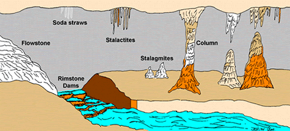

Cave formations are commonly known as “cave onyx.” It is a form of calcium carbonate which is the same material of which limestone is made. Its only value is the beauty it adds to the cave. It is brittle and will break like glass. The acid from the touch of one’s hand to cave onyx will destroy the gloss on it and make it dull and unattractive. Cave onyx is formed by surface water which combines with carbon dioxide which is given off by plants, and forms a mild carbonic acid. The acid dissolves limestone rock (calcium carbonate) and forms calcium bicarbonate which is soluable in water. This solution seeps down into the cave. The limestone will stay in bicarbonate form only as long as the carbon dioxide is present. Since carbon dioxide is normally a gas, it takes pressure and low temperature to keep it in the solution. This pressure is furnished by the ground as the solution seeps through and the coolness is furnished by the natural coolness of the earth. When this bicarbonate solution reaches the cave ceiling, the pressure is relieved and the solution warms up. This releases the carbon dioxide and the calcium bicarbonate turns back to plain old calcium carbonate which is not soluable in water so it is deposited on the cave ceiling or floor in the form of cave onyx. The rate of drip is an important factor in the rate of growth and shape of the formation. If the drip is slow, most of the deposit is left on the ceiling. If it is fast, the major deposit is left on the floor. A slow drip makes faster growth than fast drip. The average growth of formations is about one cubic inch per 100 years!
This photo shows a part of the pathway you will be touring on with a large flowstone formation on the left.
The photo is shound a group of column that we call the Cathedral.
This image shows the most common formation you see in caves and caverns. In our cavern we will have other formations you will be able to see and take pictures of aswell.